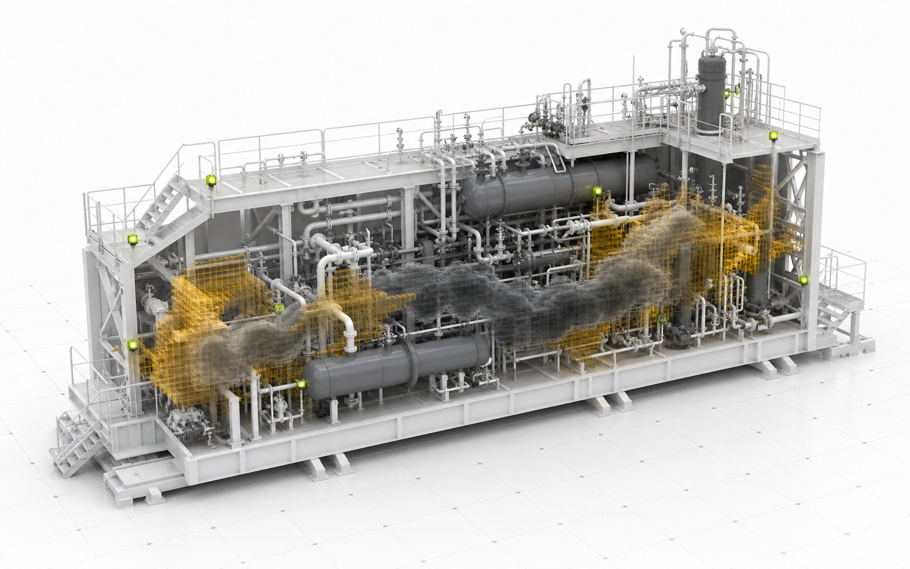
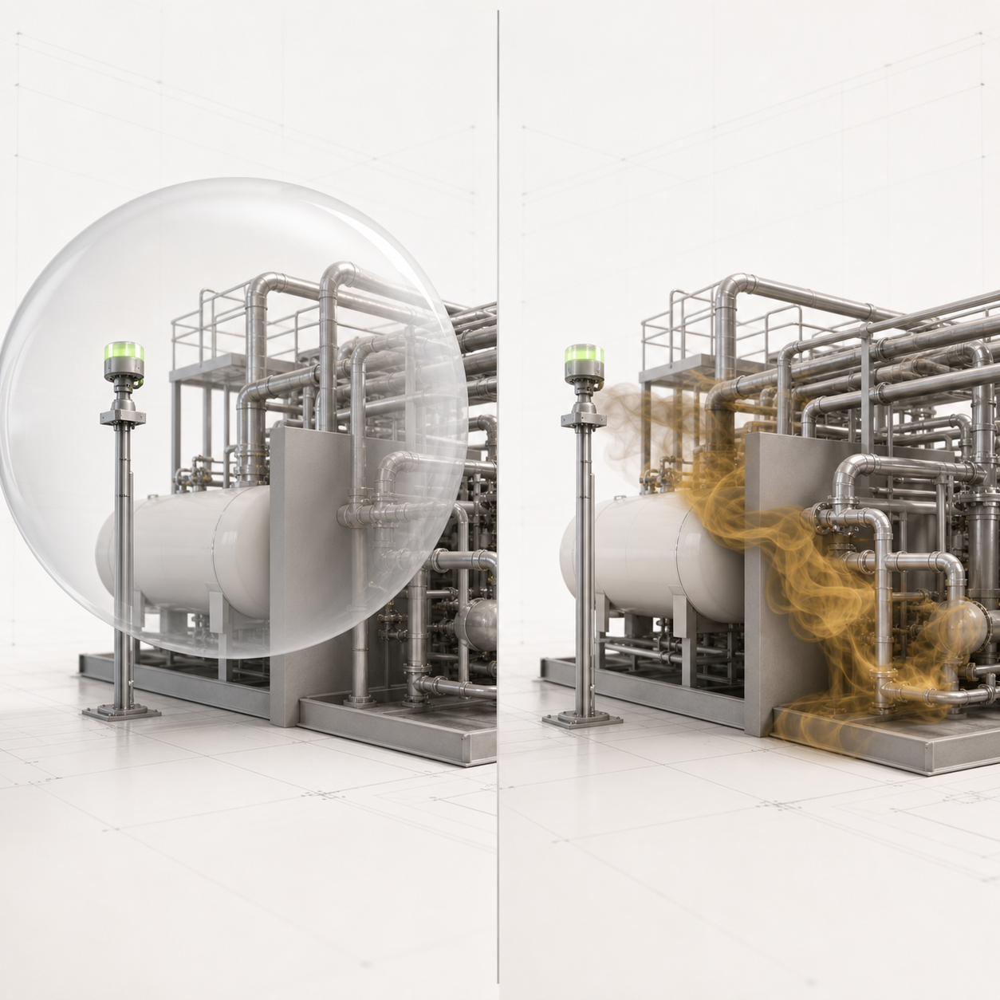

Reconstruct the evidence
Ingest the project documents and plant model. Every extracted fact keeps its document, page, method and confidence.
Deterministic extraction · SHA-256 provenanceAssure3D · Pilot programme
Your mapping study proved a design on the day it was issued. Barrier Intelligence shows whether that design still detects the releases your plant can produce across real geometry, credible scenarios and every wind.
Functional prototype heading to pilot · Offline deterministic core · Engineer sign-off retained

01 · The verification gap
A fixed coverage drawing cannot see the wind change, congestion grow, a detector move, or a process condition leave the assumed case. The plant keeps changing. The claim does not.

of hydrocarbon releases in the cited UK HSE dataset went undetected by the as-installed F&G system.
Source: UK HSE RR672Manual studies sample the scenario space. The missed combinations are where blind zones survive.
The design is rarely re-tested after MOCs, detector moves, proof-test findings or geometry changes.
02 · From documents to a defensible verdict
Barrier Intelligence does not replace your HAZOP, LOPA, philosophy or 3D model. It carries their logic forward and tests whether the physical detection response earns the credit.
Ingest the project documents and plant model. Every extracted fact keeps its document, page, method and confidence.
Deterministic extraction · SHA-256 provenanceEnumerate credible release nodes, winds and process cases. Score detector response against the true 3D dispersion envelope.
Surrogate ranks · Solver decidesTrace each HAZOP scenario through physical detection votes and issue a barrier verdict an engineer can inspect and sign.
The register signs · Physics owns the verdict03 · The F&G Barrier Credit Register
Every scenario is tied to its hazard basis, detector votes, coverage, timing, evidence quality and smallest physical fix. Confidence may demote a verdict. It can never manufacture credit.
04 · One core, two products
Design and re-verification
Turn a static mapping basis into a physics-grounded assessment across the scenario and wind space, then prescribe the smallest physical change that restores the claim.
Gated V1 · Not yet shipping
AssureLive is the planned operational layer: a virtual detector mesh, process-inferred detection and continuous E(t), with live evidence packs for audit and response.
05 · Proof, not projection
The direction is clear: physics and optimisation can reduce device count while keeping the coverage objective in view.
Kenexis · published exampleA useful signal for operators and EPCs: assurance and capital discipline can point in the same direction.
IChemE Hazards 28Compress weeks of manual cross-referencing and sampled cases into an engineer-reviewed, repeatable workflow.
Barrier Intelligence prototype targetThe destination
First, verify the design basis with Assure3D. Next, prove operational effectiveness with AssureLive. The long view is autonomous safety built on a barrier claim that is continuously earned, not inherited from a drawing.
Pilot with Barrier Intelligence
Bring one mapping study, the supporting documents and the plant model. We will show where the design basis holds, where it does not, and what the smallest defensible fix looks like.